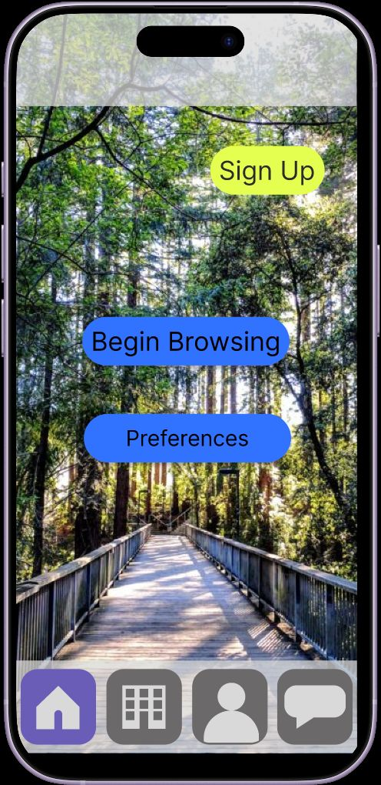
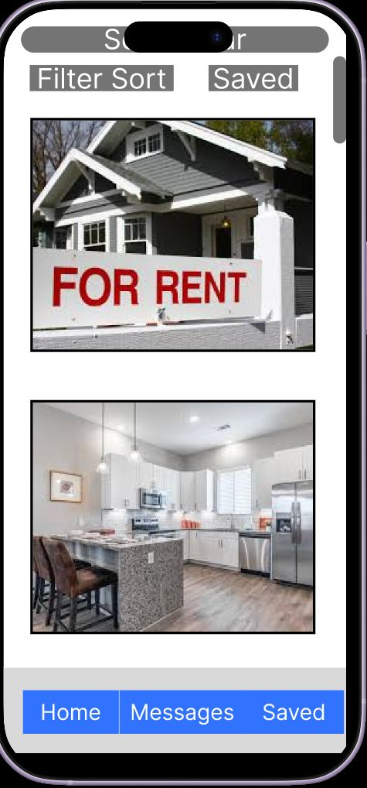
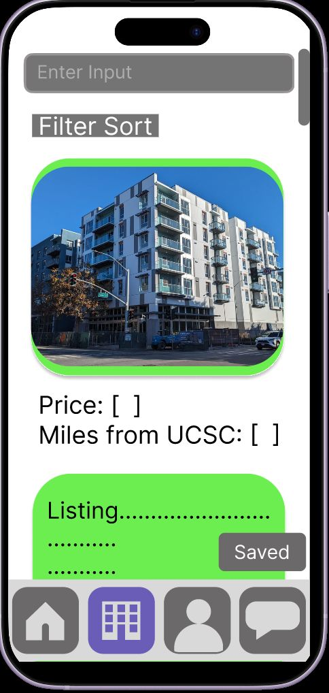
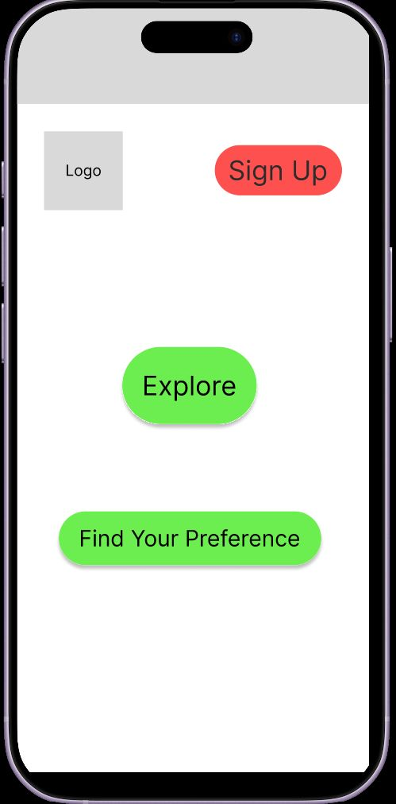

Designing digital experiences around human behavior.
I'm a cognitive science graduate specializing in AI & HCI — I turn ambiguous problems into information architecture, tested prototypes, and decisions backed by real user data.
Trained to notice what a system isn't saying.
I study cognitive science with a specialization in AI & Human-Computer Interaction at UC Santa Cruz, minoring in Computer Science. That combination means I approach design from both directions — the research methods that explain why a user hesitates, and the prototyping skills to fix it.
Across internships and lab work, I've run usability trials on accessibility interfaces, built analytics dashboards used by executives and investors, and led end-to-end UX research and prototyping for a full product concept. I'm most energized by the fine-grained part of design: the point where a wireframe becomes a decision about typeface, spacing, or a button's state.
Research-driven, tool-fluent.
Research & UX
Design & Collaboration
Data & AI
Where the research has taken me.
Phygtl, Inc.
Apr 2026 — Current- Conducted competitive benchmarking across 8 peer products (Airbnb Experiences, Nextdoor) to evaluate positioning, feature gaps, and engagement opportunities.
- Configured automated analytics workflows via custom AI agents and built interactive Looker Studio dashboards to track usage, engagement, and retention.
- Analyzed quantitative interaction data into strategic reports for executive leadership and investors.
Tech4Good @ UCSC
Mar 2026 — Jun 2026- Completed a studio-style apprenticeship focused on hands-on skill building and project experience.
- Learned visual design principles, brand logo design, usability heuristics, rapid iteration, information architecture, user research, AI-assisted design, color psychology, and user flows/journeys, wireframing and prototyping in Figma.
- Built real-world projects including brand style guides, WCAG accessibility checks, logos, user flows, and paper-to-mid-fi wireframes.
UCSC Computer Vision Lab
Mar 2025 — Jun 2025- Designed and ran 15 usability trials across 8 system configurations to optimize a web-based head-pointing interface for users with upper-limb impairments.
- Measured effectiveness and accessibility by analyzing 120 RMSE performance data points in SPSS and Excel.
- Applied cognitive load and human factors principles to refine calibration workflows, producing 13+ visualizations that guided iterative UI improvements.
Ohlone College
Nov 2023 — May 2024- Scoped and managed end-to-end qualitative and quantitative research to diagnose completion barriers in a Tesla-funded technical certification program.
- Recruited, screened, and surveyed 60+ participants across 3 mixed-methods research cycles.
- Pitched a strategic hybrid delivery model that drove a 50% increase in student enrollment.
Slug Housing App
An end-to-end UX research and prototyping project reimagining off-campus housing search for UCSC students shut out of the housing lottery.
Simplifying campus housing discovery
When UCSC students lose the housing lottery, they're left searching fragmented rental sites with hidden costs, unverified listings, and no way to gauge roommate fit — often on a tight, urgent timeline. Slug Housing replaces that scramble with a preference-first search built around trust and speed.

The bet
Designing around two students
John Cruz
Secure affordable housing near UCSC transit lines quickly, before the term starts.
First time living independently, tight financial-aid budget, worried about homelessness after missing the housing lottery.
Sarah Lin
Find compatible housemates and a flexible 9-month sublease near downtown Santa Cruz.
Incompatible roommate habits in the past; struggles evaluating utility splits and lease terms remotely.
From lottery rejection to signed lease
Loses the lottery, downloads the app
Worried / DesperateCompletes the survey, browses the feed
Excited → HopelessReviews costs, messages a landlord
HopefulSecures a lease or a shortlist
RelievedStructuring the app around three jobs
Entry & Onboarding
Landing, login, sign-up, guest mode. A preference survey captures budget, distance to UCSC, and roommate count, feeding directly into profile creation.
Search & Discovery
Search bar plus filter/sort controls over a card feed leading with price, distance from UCSC, and a thumbnail — the three facts students scan for first.
Listing & Contact
Property detail combines a photo carousel, address, price, and utility overview with two actions: save the listing or message the landlord directly.
What usability testing changed
Before & after: bottom navigation
Testers lost their sense of place with no persistent, labeled navigation. The redesign added a fixed icon bar with a clear active-state indicator.


Before & after: landing page
Two testers mistook the homepage for a login portal. The redesign added imagery and clearer visual hierarchy to signal what the app is for.

What this proved
- Bypasses generic real-estate clutter to address the specific realities of a UCSC housing crisis: lottery cutoffs, financial-aid budgets, school-year lease terms.
- Replaces manual filtering with a short onboarding survey that matches listings to budget, proximity, and housemate fit before a student starts scrolling.
- Rapid listing comparison, transparent utility details, and direct messaging together target the single biggest driver of student stress: time.